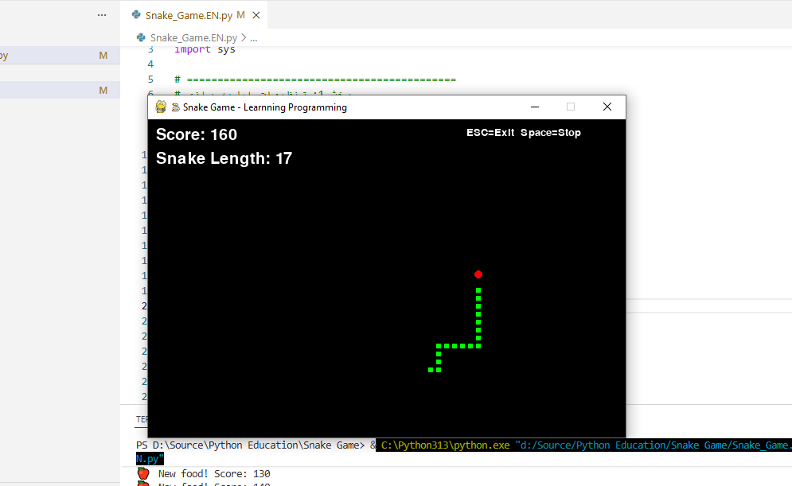

سایر بخشهای این مقاله:
بازی بساز برنامه نویسی با پایتون یاد بگیر - بخش دوم بازی بساز برنامه نویسی با پایتون یاد بگیر - بخش سوم (پایان)
برای یاد گرفتن برنامهنویسی لازم نیست همیشه با صفحههای سیاه و کسلکننده و محاسبات عجیب ریاضی شروع کنیم. می توانیم یک راه جذابتر را در پیش بگیریم: به جای اینکه فقط دستورات خشک و خالی را حفظ کنیم، برویم سراغ خاطرهبازی و یک بازی نوستالژیک مثل Snake را از صفر با پایتون بسازیم.
پایتون زبان برنامهنویسی فوقالعاده ای است، پیچیدگیهای بی مورد ندارد و کدهایش آنقدر تمیز و خوانا هستند که همان گام اول هم میتوانید بفهمید چه خبر است. قرار نیست در این مسیر، فقط یک مشت تئوری حفظ کنیم. وقتی داریم کد میزنیم تا آن مار گرسنه توی صفحه دنبال غذا بگردد و با هر لقمه بزرگتر شود، ناخودآگاه کلی مفهوم کلیدی مثل متغیرها، حلقههای تکرار، شرطها و حتی برنامهنویسی شیءگرا را هم یادمیگیریم. این مقاله برای آشنایی نوآموزان و علاقمندانی که به برنامه نویسی علاقه دارند اما دانش آنها در این حوزه کم است تدوین شده است و بنابراین سعی شده از برخی پیچیدگی های رایج در آموزش برنامه نویسی پرهیز شود.
مار بازی
در ابتدا ببینیم قرار است چه چیزی ساخته شود. بازی Snake یک بازی خاطره انگیز، نوستالژیک و ساده است که حتماً روی گوشیهای قدیمی نوکیا دیدهاید. ماجرا از این قرار است: بازیکن کنترل مار کوچکی را روی یک صفحه شطرنجی به عهده دارد که مدام در حال حرکت است. هدف فقط یک چیز است؛ هدایت مار به سمت غذاهای پراکنده در صفحه تا با خوردنشان، هم امتیاز بگیرد و هم آنرا چاق و چلهتر کند. اما نکته هیجانانگیز ماجرا اینجاست که مار بزرگتر میشود و دیگر نمیتواند به راحتی از سر راه خودش کنار برود. یک برخورد اشتباه با دیوارها یا دم مار، یعنی پایان بازی! سادگی و چالش همزمان این بازی، آن را جاودانه کرده است.
تصویر زیر صحنهای از بازی مورد اشاره را نشان می دهد که قصد ساخت آنرا داریم.

یک نگاه سریع
برنامه از ۴ بخش اصلی تشکیل شده که مثل قطعات لگو کنار هم قرار گرفتن:
۱. تنظیمات اولیه (Config) مقادیر ثابت بازی مثل اندازه صفحه، رنگها و سرعت حرکت مار. شبیه به دفترچه راهنمای یک اسباببازی است.
۲. مدیریت دادهها (Data Layer)
-
بدن مار: یه لیست از مختصات
[x, y]که نشان میدهد بدن مار در کدام خانه ها از صفحه شطرنجی حضور دارد. با حرکت مار، خانه جدید به سر اضافه و از دم کم میشود. -
غذا: یه مختصات تصادفی است ( یک خانه از صفحه شطرنجی ) که مار باید آنرا بخورد.
-
امتیاز و وضعیت بازی: متغیرها یا مقادیر ساده عددی هستند.
۳. موتور بازی (Game Engine) حلقهای بیپایان که ۶۰ بار در ثانیه کارهای زیر را تکرار میکند:
-
ورودی کاربر را میخوند (کلیدهای جهتنما)
-
منطق بازی را اجرا میکند (حرکت، برخورد، خوردن غذا)
-
صحنه را دوباره رسم میکند
۴. نمایشگر (Renderer) با Pygame صفحه را ترسیم میکند:
-
پسزمینه مشکی
-
دایره قرمز برای غذا
-
مستطیلهای سبز برای بدن مار
و سرانجام اینکه همه چیز در تابع game_loop() هماهنگ میشود و این تابع وظیفه شروع برنامه و بازی را بر عهده دارد. بنابراین بیائید از همین نقطه شروع کنیم.
ساده ترین پاسخ به این سؤال که برنامه نویسی چیست؟
برنامهنویسی یعنی هنر حرف زدن با کامپیوتر، اما نه با زبان خودمان، بلکه با دستوراتی که برایش قابل فهم باشد. به زبان سادهتر، تصور کنید میخواهیید برای یک ربات شخصی، یک دفترچه راهنما بنویسید. برنامهنویسی دقیقاً یعنی تدوین مجموعهای از همین دستورات دقیق، که قدم به قدم و با ساختاری کاملاً مشخص و منطقی اجرا میشوند. نکته جذاب ماجرا اینجاست که کامپیوتر یک مجری بسیار دقیق اما کاملاً کور است؛ او فقط خط به خط دفترچه راهنمای شما را میخواند و اجرا میکند تا هدف نهایی یک مسئله حاصل شود. حال این هدف میتواند خیلی ساده باشد، مثل جمع زدن دو عدد، یا فوقالعاده پیچیده، مثل ساخت یک بازی که باید ماری گرسنه را در صفحه ای هدایت کنید!
شروع کنیم
کد زیر بخش اصلی برنامه را نشان می دهد. این بخش شامل دستوراتی است که هنگام شروع اجرا می شوند.
# ============================================
# بخش 4: اجرای بازی
# ============================================
if __name__ == "__main__":
print("=" * 40)
print("🐍 Welcome to Snake game! 🐍")
print("=" * 40)
game_loop()صرفنظر از خطوط ۱ تا ۳ که صرفاً توضیحاتی برای برنامهنویس هستند و پایتون آنها را نادیده میگیرد، باقی کد هدف مشخصی را دنبال میکند: نمایش یک پیام خوشآمدگویی به کاربر و سپس فراخوانی تابع ()game_loop که هسته اصلی بازی را راهاندازی میکند. اما در پس این چند خط ساده، مفاهیم بنیادین برنامهنویسی نهفته است که درک آنها برای هر برنامهنویسی ضروری است.
ساختارهای کنترلی
ابتدا به یک ساختار کنترلی از نوع انشعاب یا همان شرط if برمیخوریم. عبارت if __name__ == "__main__": این یک عبارت منطقی است که نتیجه آن یا “درست” است یا “نادرست” و مسیر اجرای برنامه را مشخص میکند. ساختار شرطی if یکی از پایهایترین و در عین حال پرکاربردترین ابزارهای کنترل جریان اجرا در زبانهای برنامه نویسی از جمله پایتون است. این ساختار به برنامه اجازه میدهد تا بر اساس درست یا نادرست بودن یک شرط، مسیر متفاوتی را برای اجرای دستورات انتخاب کند. به بیان دقیقتر، if امکان تصمیمگیری را به کد اضافه میکند.
نحو کلی این ساختار با کلمه کلیدی if آغاز میشود و پس از آن، یک عبارت شرطی قرار میگیرد که نتیجهاش باید یک مقدار منطقی (True یا False) باشد. این عبارت با دونقطه : به پایان میرسد. تمام دستوراتی که باید در صورت برقرار بودن شرط اجرا شوند، با یک تورفتگی (Indentation) مشخص در خطوط بعدی نوشته میشوند. این تورفتگی در پایتون اجباری است و نقش تعیینکنندهای در محدوده کد دارد.
برای بررسی حالتی که شرط برقرار نباشد، از کلمه کلیدی else استفاده میشود. همچنین، اگر نیاز به بررسی چند شرط متوالی باشد، میتوان از elif (مخفف else if) بهره برد. یک مثال ساده: اگر نمره دانشجویی بیشتر از ۱۷ باشد، پیام “عالی” و در غیر این صورت، پیام “نیاز به تلاش بیشتر” چاپ شود. در پروژه بازی Snake نیز از این ساختار برای بررسی برخورد مار با دیوارها یا بررسی فشردن کلیدهای جهتنما توسط کاربر استفاده خواهیم کرد. این ساختار، منطق برنامه را شکل میدهد و آن را از یک مسیر خطی صرف خارج میسازد.
در ادامه، اصل توالی را مشاهده میکنیم. پایتون دستورات را به ترتیب و خط به خط اجرا میکند: پس از ارزیابی شرط، و در صورت درست بودن نتیجه، چند دستور print متوالی پیامها را نمایش میدهند و پس از آن، ()game_loop فراخوانی میشود. این ترتیب خطی، پیشبینی رفتار برنامه را ممکن میسازد.
یکی دیگر از مهمترین ساختارهای کنترلی در برنامه نویسی حلقه های تکرار است که در ادامه بررسی کد برنامه به آنها خواهیم پرداخت.
عبارات
برای درک مفهوم عبارت در برنامهنویسی، به خط print("=" * 40) دقت کنید. در این خط، بخش 40 * "=" یک عبارت (Expression) است. عبارت به هر بخشی از کد گفته میشود که ارزیابی شده و در نهایت به یک مقدار مشخص تبدیل میگردد. به بیان سادهتر، عبارت چیزی است که یک «نتیجه» تولید میکند. این نتیجه میتواند یک عدد، یک رشته متنی، یا یک مقدار منطقی باشد.
در این مثال، عملگر * بر روی دو عملوند اعمال شده است: یک رشته متنی ("=" و یک عدد صحیح 40). آنچه در اینجا رخ میدهد، نمایی از مفهومی به نام چندریختی عملگرها است. عملگر * بسته به نوع دادهای که دریافت میکند، رفتار متفاوتی از خود نشان میدهد. اگر دو عملوند آن اعداد باشند، عملیات ضرب ریاضی انجام میدهد و حاصل یک عدد خواهد بود. اما چنانچه یک عملوند رشته و دیگری عدد باشد، عملیات تکرار رشته را انجام میدهد و حاصل، یک رشته جدید خواهد بود. بدین ترتیب، عبارت 40 * "=" ارزیابی میشود و نتیجه آن یک رشته متنی شامل چهل علامت مساوی است. این رشته سپس به عنوان آرگومان به تابع print ارسال میشود.
بنابراین، یک عبارت میتواند ترکیبی از عملگرها، عملوندها و فراخوانی توابع باشد، مشروط بر آنکه در نهایت به یک مقدار واحد تبدیل شود. درک مفهوم عبارت از آن جهت اهمیت دارد که سنگ بنای نوشتن هر دستور منطقی را تشکیل میدهد. هر جا که نیاز به محاسبه، مقایسه یا تولید یک مقدار داشته باشیم، در واقع از یک عبارت استفاده میکنیم. در کد بازی Snake نیز از عبارات برای محاسبه موقعیت جدید مار، بررسی برخورد با دیوارها و افزایش امتیاز بازیکن بهره خواهیم برد.
زیربرنامه/روال یا تابع
در ادامه بررسی مفاهیم پایه، به اصل مهم زیربرنامه یا همان تابع میرسیم. تابع، بلوکی از کد است که مجموعهای از دستورات مرتبط را با یک نام مشخص در خود جای میدهد و میتوان آن را هر زمان که نیاز بود، فراخوانی کرد. در کد ما، تمام منطق بازی شامل حرکت مار، تشخیص برخورد با دیوارها، مدیریت امتیاز و شرایط پایان بازی، درون تابعی به نام game_loop بستهبندی شده است. با نوشتن game_loop در خط آخر، برنامه، به سراغ بدنه این تابع رفته و دستورات درون آن را به ترتیب اجرا میکند.
استفاده از توابع، فواید متعددی دارد که آن را به یکی از اصول بنیادین برنامهنویسی ساختیافته تبدیل کرده است. نخستین مزیت، افزایش خوانایی و وضوح کد است. به جای آنکه دهها خط دستور پراکنده داشته باشیم، با دیدن نام تابعی مانند move_snake یا check_collision میتوانیم به سرعت دریابیم که آن بخش از برنامه چه وظیفهای بر عهده دارد. مزیت دوم، اجتناب از تکرار کد و قابلیت استفاده مجدد است. اگر لازم باشد بخشی از منطق برنامه را چندین بار در نقاط مختلف اجرا کنیم، به جای بازنویسی مکرر دستورات، تنها تابع مربوطه را فراخوانی میکنیم. این امر از افزونگی کد جلوگیری کرده و نگهداری برنامه را سادهتر میسازد. مزیت سوم، ماژولار بودن برنامه است. با شکستن یک مساله بزرگ به توابع کوچکتر، میتوان هر بخش را به صورت مستقل توسعه داد، آزمایش کرد و اشکالزدایی نمود. در پروژه بازی Snake، ما نیز این رویکرد را در پیش خواهیم گرفت و بخشهای مختلف بازی را به توابع مجزا تفکیک میکنیم تا کدی تمیز، منظم و قابل توسعه داشته باشیم.
موتور بازی
حال به بررسی روال اصلی برنامه که هسته مرکزی بازی را تشکیل میدهد میپردازیم. قطعه کد زیر، بخش آغازین تابع game_loop را نشان میدهد. در این بخش، وضعیت اولیه بازی پیش از ورود به چرخه اصلی تعریف میشود.
def game_loop():
"""حلقه اصلی بازی"""
# وضعیت اولیه مار (وسط صفحه)
snake_x = WINDOW_WIDTH // 2
snake_y = WINDOW_HEIGHT // 2
# جهت حرکت اولیه (بدون حرکت)
change_x = 0
change_y = 0
# بدن مار (لیستی از مختصات)
snake_body = [[snake_x, snake_y]]
snake_length = 1در این چند خط کد، با چند مفهوم اساسی و جدید در برنامهنویسی آشنا میشویم که هر یک نقش مهمی در ساختار برنامه ایفا میکنند.
متغیرها
نخستین مفهوم، متغیرها هستند. متغیرها در واقع فضاهایی در حافظه کامپیوترند که دادهها را در خود نگهداری میکنند و به ما امکان میدهند در طول اجرای برنامه به آنها ارجاع دهیم و مقادیرشان را تغییر دهیم. در این کد، snake_x و snake_y موقعیت اولیه سر مار، change_x و change_y میزان تغییر مختصات در هر گام، و snake_length طول اولیه مار را ذخیره میکنند. هر متغیر دارای یک نام، یک نوع داده و یک مقدار است. برای نمونه، تمام متغیرهای یادشده از نوع عدد صحیح هستند.
سایر انواع متغیرها در پایتون عبارتند از:
اعداد اعشاری (Float): این نوع داده برای ذخیره اعداد دارای بخش اعشار به کار میرود. برای نمونه، اگر نیاز به محاسبه سرعت بر حسب پیکسل در ثانیه داشته باشیم، ممکن است از مقادیر اعشاری مانند speed = 1.5 استفاده کنیم. این اعداد دقت بالاتری نسبت به اعداد صحیح ارائه میدهند و برای محاسبات هندسی، فیزیک حرکت و نسبتها کاربرد فراوان دارند.
رشتههای متنی (String): رشتهها دنبالهای از کاراکترها هستند که برای ذخیره و نمایش متن به کار میروند. در بازی Snake، از رشتهها برای نمایش پیامهای خوشآمدگویی، امتیاز بازیکن روی صفحه و نوشتن متن “Game Over” استفاده خواهیم کرد. رشتهها در پایتون با علامت نقل قول تکی یا دوتایی مشخص میشوند، مانند "Hello" یا 'Score: 100'. پایتون امکانات قدرتمندی برای دستکاری و قالببندی رشتهها در اختیار برنامهنویس قرار میدهد که در ادامه مقاله با آنها آشنا خواهیم شد.
مقادیر منطقی(Boolean): این نوع داده تنها دو مقدار میپذیرد: True یا False. مقادیر بولی حاصل عبارات منطقی و شرطی هستند و نقشی اساسی در ساختارهای کنترلی مانند if و while ایفا میکنند. در پروژه ما، بررسی برخورد مار با دیوار نتیجهای منطقی دارد: یا برخورد رخ داده (True) که بازی پایان مییابد، یا رخ نداده (False) که بازی ادامه پیدا میکند. بدون این نوع داده، تصمیمگیری در برنامه عملاً غیرممکن خواهد بود.
لیستها (List): همانطور که در کد snake_body مشاهده کردیم، لیستها مجموعهای مرتب از مقادیر هستند که میتوانند انواع مختلف داده را در خود جای دهند. لیستها با براکت [] تعریف میشوند و هر عضو با یک اندیس عددی (که از صفر آغاز میشود) قابل دسترسی است. قابلیت اضافه کردن، حذف کردن و تغییر اعضا، لیستها را به ابزاری انعطافپذیر برای مدیریت مجموعه دادههای پویا تبدیل کرده است. در بازی Snake، از لیست برای نگهداری موقعیت تمام بخشهای بدن مار استفاده میکنیم.
دیکشنریها (Dictionary): نوع دادهای پیشرفتهتر که دادهها را به صورت جفتهای کلید-مقدار ذخیره میکند. هر مقدار با یک کلید منحصربهفرد قابل بازیابی است. برای مثال، میتوان تنظیمات بازی مانند رنگ مار، سرعت و سطح دشواری را در یک دیکشنری ذخیره کرد.
آشنایی با این انواع دادهای، پایه و اساس کار با پایتون را تشکیل میدهد و در ادامه مسیر ساخت بازی، به طور عملی با کاربرد برخی از آنها بیشتر آشنا خواهیم شد.
عملگرها
دومین مفهوم، عملگر است. عملگر // که در دو خط نخست به کار رفته، عملگر تقسیم صحیح است. این عملگر نتیجه تقسیم را به نزدیکترین عدد صحیح به سمت پایین گرد میکند. با تقسیم عرض و ارتفاع پنجره بازی بر عدد ۲، مختصات مرکز صفحه محاسبه میشود تا مار دقیقاً از وسط صفحه کار خود را آغاز کند.
عملگرها اجزای بنیادین هر زبان برنامهنویسی هستند که امکان انجام عملیات گوناگون را بر روی دادهها فراهم میکنند. به بیان ساده، عملگر نمادی است که به کامپیوتر میگوید چه عملی را بر روی یک یا چند عملوند انجام دهد. بدون عملگرها، دادهها صرفاً مقادیری ساکن در حافظه خواهند بود و هیچ پردازشی بر روی آنها صورت نخواهد گرفت. در پایتون، عملگرها انواع مختلفی دارند که هر یک برای دسته خاصی از عملیات طراحی شدهاند. در ادامه به معرفی مهمترین عملگرها در این زبان میپردازیم.
پیش از ورود به جزئیات، شایان ذکر است که درک صحیح عملکرد عملگرها، به ویژه مفهوم اولویت اجرا و نحوه ترکیب آنها با یکدیگر، برای نوشتن عبارات پیچیده و کارآمد ضروری است. در بازی Snake نیز به طور مداوم از عملگرها برای محاسبه موقعیت جدید مار، بررسی برخوردها و مدیریت منطق بازی بهره خواهیم برد.
عملگرهای ریاضی (Arithmetic Operators): این دسته، آشناترین نوع عملگرها هستند که برای انجام محاسبات عددی به کار میروند. عملگرهای ریاضی در پایتون شامل جمع (+)، تفریق (-)، ضرب (*)، تقسیم اعشاری (/)، تقسیم صحیح (//)، باقیمانده تقسیم (%) و توان (**) میشوند. نکته قابل توجه آن است که برخی از این عملگرها، مانند * و +، بسته به نوع عملوندها رفتار متفاوتی از خود نشان میدهند؛ برای نمونه، عملگر + بر روی اعداد جمع ریاضی و بر روی رشتهها الحاق را انجام میدهد.
عملگرهای انتساب (Assignment Operators): این عملگرها برای تخصیص مقدار به متغیرها استفاده میشوند. سادهترین آنها عملگر = است که مقدار سمت راست را در متغیر سمت چپ ذخیره میکند. پایتون شکلهای ترکیبی این عملگر را نیز پشتیبانی میکند، مانند =+ که مقدار سمت راست را با مقدار فعلی متغیر جمع کرده و نتیجه را در همان متغیر ذخیره میکند. این شکل کوتاهنویسی، کد را خواناتر و فشردهتر میسازد.
عملگرهای مقایسهای (Comparison Operators): این عملگرها دو مقدار را با یکدیگر مقایسه کرده و نتیجهای منطقی (True یا False) تولید میکنند. عملگرهای مقایسهای شامل مساوی (==)، نامساوی (=!)، بزرگتر (>)، کوچکتر (<)، بزرگتر یا مساوی (=<) و کوچکتر یا مساوی (=>) هستند. این عملگرها ستون فقرات ساختارهای شرطی و حلقهها را تشکیل میدهند؛ هر جا که برنامه نیاز به تصمیمگیری داشته باشد، پای یک عملگر مقایسهای در میان است.
عملگرهای منطقی (Logical Operators): برای ترکیب چند شرط منطقی از عملگرهای منطقی استفاده میشود. پایتون سه عملگر منطقی اصلی دارد: and (هر دو شرط باید برقرار باشند)، or (حداقل یکی از شروط باید برقرار باشد) و not (نقیض شرط). این عملگرها به برنامهنویس امکان میدهند عبارات شرطی پیچیدهتری بنویسد. برای مثال، در بازی Snake میتوان بررسی کرد که آیا مار هم به دیوار برخورد کرده و هم طول آن از حد معینی بیشتر شده است یا خیر. در ادامه این مقاله، برخی از این عملگرها را با جزئیات بیشتر و همراه با مثالهای عملی از پروژه بازی Snake بررسی خواهیم کرد.
ساختارهای داده ای
سومین و یکی از مهمترین مفاهیمی که در این قطعه کد با آن روبرو میشویم، ساختارهای دادهای و به طور خاص لیست است. متغیر snake_body بصورت یک لیست تعریف شده که شامل مختصات بخشهای مختلف بدن مار است. هر عضو این لیست، خود یک لیست کوچکتر دو عضوی شامل مختصات x و y یک قطعه از بدن مار را در خود دارد. این شیوه سازماندهی دادهها، ما را با یکی از قدرتمندترین ابزارهای برنامهنویسی آشنا میکند.
ساختار دادهای به روشی مشخص برای ذخیرهسازی، سازماندهی و مدیریت مجموعهای از دادهها در حافظه کامپیوتر گفته میشود. انتخاب ساختار دادهای مناسب، تأثیر مستقیمی بر کارایی، خوانایی و قابلیت نگهداری برنامه دارد. یک ساختار دادهای خوب به ما امکان میدهد عملیاتی نظیر جستجو، درج، حذف و مرتبسازی را با سرعت و دقت بالا انجام دهیم. بدون ساختارهای دادهای مناسب، مدیریت حجم بالای اطلاعات در برنامههای واقعی عملاً غیرممکن خواهد بود.
اهمیت ساختارهای دادهای را میتوان از چند منظر بررسی کرد. نخست، آنها سازماندهی منطقی دادهها را فراهم میکنند و به برنامهنویس امکان میدهند به جای درگیری با آدرسهای حافظه، با مفاهیم انتزاعیتر کار کند. دوم، بهینهسازی عملکرد برنامه با انتخاب ساختار مناسب حاصل میشود؛ برای نمونه، جستجو در یک لیست مرتب با جستجو در یک لیست نامرتب تفاوت چشمگیری دارد. سوم، ساختارهای دادهای بازنمایی طبیعی مسائل دنیای واقعی را ممکن میسازند؛ همانگونه که بدن یک مار به صورت طبیعی به عنوان دنبالهای از قطعات متوالی در نظر گرفته میشود، بنابراین لیست، بازنمایی مناسبی برای آن است.
پایتون مجموعهای غنی از ساختارهای دادهای داخلی ارائه میدهد که مهمترین آنها عبارتند از:
لیست (List): پرکاربردترین ساختار دادهای در پایتون که مجموعهای مرتب و قابل تغییر از عناصر را در خود جای میدهد. اعضای لیست میتوانند انواع مختلف داده باشند و با اندیس عددی (که از صفر شروع میشود) قابل دسترسی هستند. قابلیتهایی مانند اضافه کردن عنصر با append، حذف با remove و دسترسی به بخشی از لیست با برش (Slicing)، این ساختار را بسیار انعطافپذیر ساخته است. در بازی Snake، از لیست برای ذخیره موقعیت تمام بخشهای بدن مار استفاده میکنیم و با هر بار حرکت، اعضای آن بهروزرسانی میشوند.
تاپل (Tuple): مشابه لیست، اما غیرقابل تغییر است. پس از ایجاد یک تاپل، نمیتوان اعضای آن را تغییر داد، اضافه یا حذف کرد. این ویژگی، تاپل را برای ذخیره دادههایی که نباید در طول اجرای برنامه تغییر کنند، مانند مختصات ثابت یا تنظیمات پیکربندی، مناسب میسازد. تاپلها با پرانتز () تعریف میشوند.
دیکشنری (Dictionary): ساختاری که دادهها را به صورت جفتهای کلید-مقدار ذخیره میکند. برخلاف لیست که با اندیس عددی کار میکند، در دیکشنری هر مقدار با یک کلید یکتا قابل دسترسی است. این ویژگی برای نگهداری اطلاعاتی که نیاز به جستجوی سریع دارند، مانند پروفایل کاربران یا تنظیمات بازی، بسیار کارآمد است. دیکشنریها با آکولاد {} مشخص میشوند.
مجموعه (Set): مجموعهای نامرتب از عناصر یکتا است. این ساختار برای حذف دادههای تکراری و بررسی سریع عضویت یک عنصر در مجموعه به کار میرود.
درک عمیق ساختارهای دادهای و انتخاب آگاهانه آنها، یکی از مهارتهای کلیدی است که یک برنامهنویس مبتدی را از یک برنامهنویس حرفهای متمایز میکند. در ادامه مسیر ساخت بازی Snake، کاربرد عملی برخی از این ساختارها را به طور ملموس تجربه خواهیم کرد.
تنظیمات
قطعه کد زیر، بخش تنظیمات اولیه بازی را نمایش میدهد. در این بخش، مجموعهای از متغیرها تعریف شدهاند که مقادیر ثابت و پیکربندی کلی بازی را در خود نگهداری میکنند. این متغیرها شامل تعریف رنگها به صورت چندتاییهای RGB و پارامترهای صفحه بازی مانند عرض، ارتفاع، اندازه هر خانه و سرعت اجرا هستند. آنچه این بخش را از منظر مفاهیم برنامهنویسی حائز اهمیت میسازد، موقعیت تعریف این متغیرها و تأثیر آن بر دامنه دسترسی آنها است.
# ============================================
# بخش 1: تنظیمات اولیه بازی
# ============================================
# تعریف رنگها (RGB)
# هر رنگ از ترکیب سه رنگ قرمز، سبز و آبی ساخته میشه
BLACK = (0, 0, 0) # مشکی
WHITE = (255, 255, 255) # سفید
RED = (255, 0, 0) # قرمز
GREEN = (0, 255, 0) # سبز
BLUE = (0, 0, 255) # آبی
# تنظیمات صفحه بازی
WINDOW_WIDTH = 600 # عرض پنجره
WINDOW_HEIGHT = 400 # ارتفاع پنجره
BLOCK_SIZE = 10 # اندازه هر خانه مار (به پیکسل)
GAME_SPEED = 10 # سرعت بازی (فریم در ثانیه)
تمامی متغیرهای تعریف شده در این بخش، خارج از هر تابع یا کلاس قرار گرفتهاند و به همین دلیل، متغیرهای سراسری نامیده میشوند. این مفهوم در تضاد مستقیم با آنچه پیشتر درباره متغیرهای محلی دیدیم قرار دارد. یک متغیر سراسری در تمام بخشهای برنامه، اعم از توابع مختلف و بدنه اصلی کد، قابل دسترسی و استفاده است. برای نمونه، در تابع game_loop که هسته مرکزی بازی را تشکیل میدهد، میتوانیم مستقیماً به مقادیر WINDOW_WIDTH یا GREEN ارجاع دهیم، بدون آنکه نیاز به تعریف مجدد آنها یا ارسال به عنوان پارامتر باشد.
این تفاوت میان متغیرهای محلی و سراسری، ما را با مفهوم مهم قلمرو دادهها یا حوزه دید عمیقتر آشنا میسازد. قلمرو یک متغیر، محدودهای از کد است که در آن، متغیر قابل مشاهده و معتبر است. متغیرهایی که درون یک تابع تعریف میشوند، متغیرهای محلی نامیده شده و تنها در محدوده همان تابع قابل دسترسی هستند. به محض پایان یافتن اجرای تابع، این متغیرها از حافظه حذف میشوند. در مقابل، متغیرهای سراسری در طول تمام چرخه حیات برنامه در حافظه باقی میمانند و هر بخش از کد میتواند مقدار آنها را بخواند.
این ویژگی نقش مهمی در جداسازی منطق برنامه و جلوگیری از تداخل ناخواسته متغیرها ایفا میکند. تصور کنید دو تابع متفاوت، هر یک متغیری به نام speed تعریف کردهاند. اگر قلمرو دادهها وجود نداشت، تغییر مقدار speed در یک تابع میتوانست ناخواسته رفتار تابع دیگر را مختل کند. اما با محصور بودن هر متغیر در قلمرو تابع خود، این تداخل به کلی منتفی میشود. این اصل، سنگ بنای برنامهنویسی ماژولار و قابل نگهداری است.
با این حال، استفاده از متغیرهای سراسری باید با دقت و به صورت کنترلشده صورت پذیرد. اگرچه دسترسی آسان به آنها وسوسهکننده است، استفاده بیرویه میتواند به کدی درهمتنیده و دشوار در اشکالزدایی منجر شود. در پروژه بازی Snake، ما از متغیرهای سراسری صرفاً برای نگهداری مقادیر ثابت و تنظیماتی استفاده میکنیم که واقعاً در سراسر برنامه مورد نیاز هستند و تغییر نمیکنند. این رویکرد، تعادلی میان راحتی دسترسی و حفظ ساختار منظم کد ایجاد میکند و شما را با یکی از ظرافتهای مهندسی نرمافزار آشنا میسازد.
یادآور میشود که متغیر BLACK = (0, 0, 0) از نوع تاپل (Tuple) است. در پایتون، هرگاه دادهها را درون پرانتز () و با کاما از یکدیگر جدا کنیم، یک تاپل ایجاد میشود. در این مثال، یک تاپل سهعضوی داریم که سه عدد صحیح را در خود جای داده و نمایانگر مقادیر رنگهای قرمز، سبز و آبی (RGB) برای رنگ مشکی است.
در بخش بعدی از این سلسله مقالات به بررسی ساختار درونی موتور بازی می پردازیم.